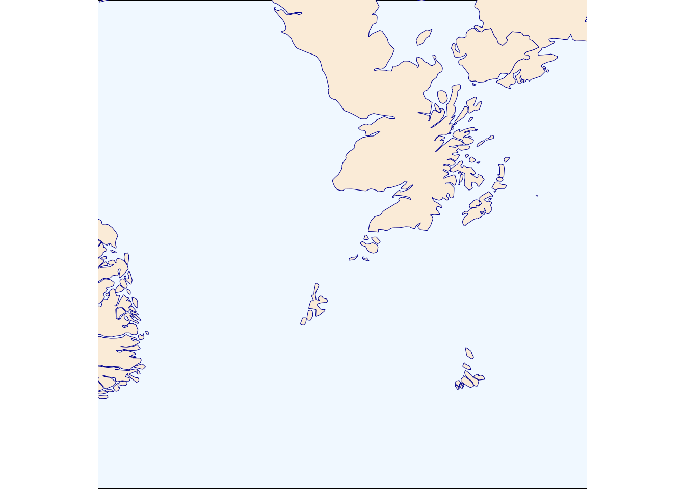

Want to see the code? Click on the black boxes on the right to show/hide the code.
During the Viking Age, roughly from the late 8th to the early 11th century, Orkney was a crucial hub at the center of the world. Because of it’s location between Scandinavia and the British Isles, the islands served as a base for Norse raids on Scotland, Ireland, and England and were vital in maritime routes connecting Norway to Iceland, Greenland, and beyond. The political power of the Norse Earldom of Orkney extended over much of the North Atlantic, with influence reaching the Hebrides, Shetland, and Caithness and Sutherland in mainland Scotland. This prominence in trade and politics is described in the Norse Orkneyinga Saga.
Orkney is often described as being ‘in the far north’, but here’s a map centered on Orkney displaying its prominence in the world of the North Atlantic Norse. The map is using a ‘South Up’ projection to invert the usual view of the world.
#First, we'll need to load a bunch of libraries so we can handle and view geospatial data
library('sf')
library(ggplot2)
#Load the shapefile for the world boundaries
uk_boundary <- st_read('./data/11/TM_WORLD_BORDERS-0.2.shp', quiet = TRUE)
#Crop the world boundaries to the area around Orkney
box = c(xmin = -20, ymin = 53, xmax = 13, ymax = 63)
sf::sf_use_s2(FALSE)
a = st_crop(uk_boundary, box)
sf::sf_use_s2(TRUE)
#Transform the projection to Mollweide, South Up
b <- a %>% st_transform(crs = "+proj=moll +axis=wsu +ellps=WGS84 +no_defs +type=crs")
#Plot the map
ggplot() +
geom_sf(data = b, fill= "antiquewhite", color="darkblue") +
coord_sf(xlim = c(-357306.1,642693.9), ylim = c(-7275697,-6275697), crs = sf::st_crs("+proj=moll +axis=wsu +ellps=WGS84 +no_defs +type=crs")) +
theme_void() +
theme(axis.line = element_blank(),panel.grid.major = element_blank(), panel.grid.minor = element_blank(), panel.border = element_blank(), panel.background = element_rect(fill = "aliceblue"))
World Boundaries: WorldWind https://worldwind.arc.nasa.gov/